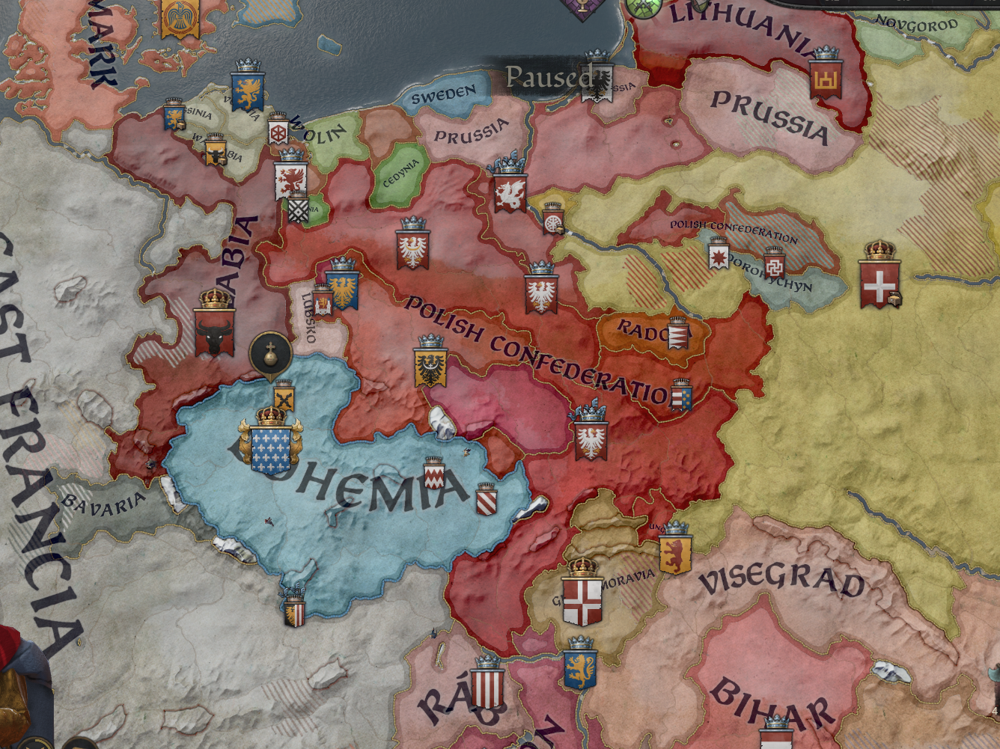

Knoty
Vévoda Český
- Převzal kontrolu nad českým knížectvím
Matej
Náčelník kmene Krakow
- Ujal se kmene krakovského

874
Knoty
Vévoda Český
- Země české v bojiště náboženských válek se proměnily, Vévoda Bavorský na Čechy slovanské udeřil, jemuž na pomoc některé kmeny slovanské přispěchaly, mezi nimi i kmen Krakovský
Matej
Náčelník kmene Krakow
- Kmenové polští v konfederaci nově ustavenou se sdružili, aby rovnováhu v zemích polských zachovali a víru slovanskou před katolíky ubránili. Matej spoluzakládajícím členem se stal po boku náčelníka kmene Polania
Knoty
Vévoda Český
- Náboženské války stále trvají, katolický král Velké Moravy však mdlé moci jest a všecky okolní kmeny slovanské se na něj obořily. Državy české se rozšířily o území na Moravě i v Rakousích
- Slezský vysoký náčelník Lubomír konfliktu mezi Slovany a katolíky využil a české koruně Hradec zabral
Matej
Náčelník kmene Krakow
- Polská konfederace na síle roste a nové a nové členy přijímá
- Střední Evropu nyní čtyři hlavní hráči tvoří — Polabí, Konfederace Polská, Čechy a Velká Morava

914
Knoty
Král Český
- Další území oslabené Velké Moravy dobývá, Vévodou Moravským a Králem Českým se prohlašuje
- Nově nabyté državy v populaci však křesťanské Slováky mají
- Severní soused Král z Polabí na síle nabývá
Martin
Vysoký náčelník Vistulie
- Značné území Velké Moravy dobývá, z kraje Nitranského vévodství nejvíce, a Vysokým náčelníkem Vistulie se prohlašuje
- Polská konfederace stagnuje

929
Velké Slovanské Války
Ferdinand
Král Český
- Křesťanského vévodu z Rakous si podmanil, avšak to poslední úspěch byl
- Slovanská kultura se v sérii mnoha válek, povstání a nepokojů zmítá
- Ferdinandovi se prozatím svá území udržet daří, leč na síle značně ztrácí
Martin
Vysoký náčelník Vistulie
- Ani Matějovi se Velké Slovanské Války nevyhnuly
- O část Vistulanie přichází ve prospěch syna, jenž Koruně Ruthenské věrný jest
- Další území na Slovensku však zabírá
- Polabí a Slezské vévodství se v Sorbské Království spojily, což polskou konfederaci značně oslabilo
Justina
Královna Česká
- Série proher výhry střídá a naopak, chaos velký
- Křesťanské nepokoje ve ztrátu Moravského i Rakouského vévodství vyústily, koruně jen České vévodství zbylo, a to značně nespokojené
- Invazi křesťanů z Frankonie ubránit se podařilo, především díky pomoci Mateje II, jenž jako JEDINÝ se k slovanským bratrům zády neobrátil
- Morava však velmi slabá jest a sérii válek prohrála, o Olomouc přišla a k české koruně násilně připojena byla
- Královna Justina, státní celistvost zachovat usilujíc, prsten Sorbskému králi Gradomírovi políbila a jeho tributary se stává
Matej II
Vysoký Vévoda Vistulanie
- Další území na Slovensku zabírá, leč bratra Zuzanu, náčelníka Sacze, pod sebe přinést nelze — ten se raději k Sorbskému králi Gradomírovi přidal
- Země zbytek však velmi stabilní jest a ostatním Slovanům i tomu, co z Polské konfederace zbylo, stále pomáhá
- Sorbský král Gradomír většinu konfederace zabírá